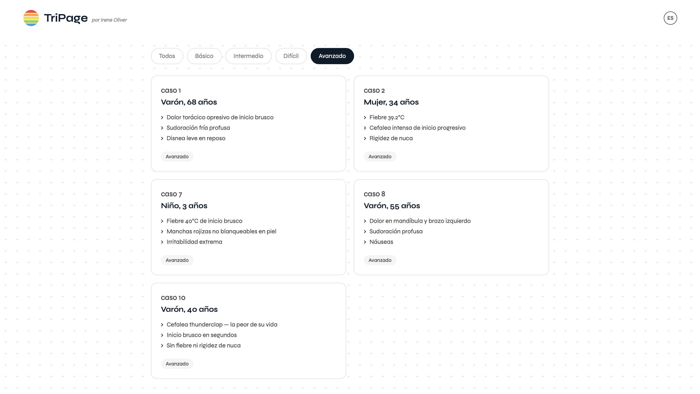
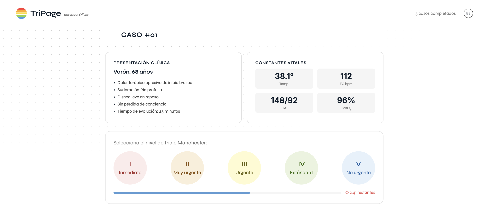

TriPage
Un estudio realizado en 7 hospitales de Asturias reveló que 1 de cada 10 clasificaciones de triaje son incorrectas. Incluso las enfermeras más experimentadas cometen errores. La investigación reveló que los años de práctica tienen poca correlación con la precisión, pero el entrenamiento mediante simulación sí.


Por qué lo construí
Antes de programar estudié enfermería. Vi de primera mano lo que ocurre en urgencias durante un incidente de múltiples víctimas o cuando el servicio está desbordado. El Sistema de Triaje Manchester es lo que decide quién recibe atención primero — y equivocarse tiene consecuencias reales. No existía ninguna herramienta web gratuita para practicarlo.
El proceso
Empecé en papel. Consideré flashcards, casos aleatorios, categorizar por tipo clínico — cardiovascular, trauma, neurológico. Pero categorizar por tipo daba pistas. En los servicios de urgencias reales no sabes lo que viene. Decidí filtrar por dificultad. Hablé con estudiantes de medicina de la Universitat Pompeu Fabra — confirmaron que no existe nada parecido y que les ayudaría a preparar el examen ECOE.
Estado actual
Actualmente en validación con estudiantes de medicina de la Universitat Pompeu Fabra. TriPage cuenta con 50 casos clínicos reales y está disponible en español e inglés.